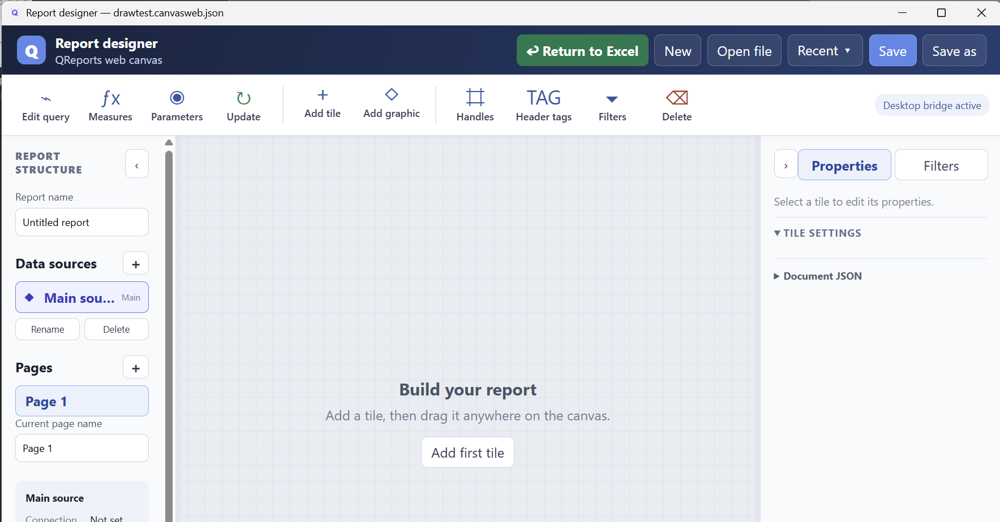
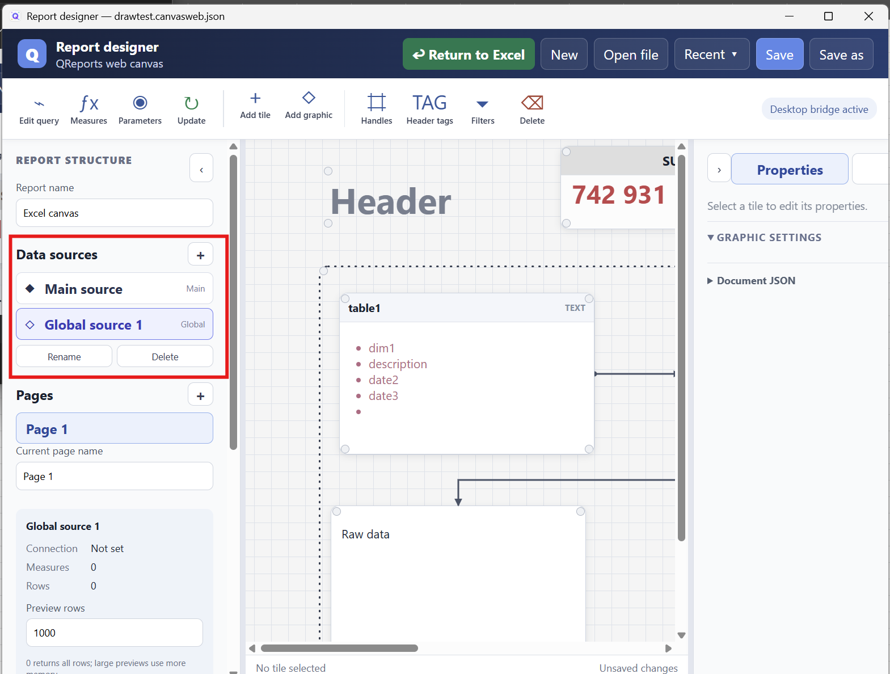
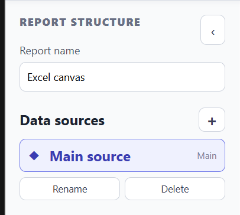
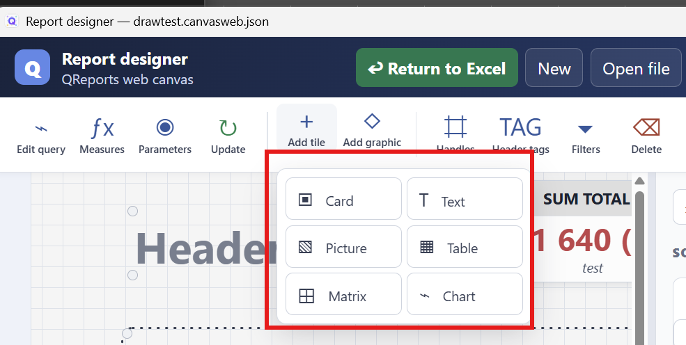
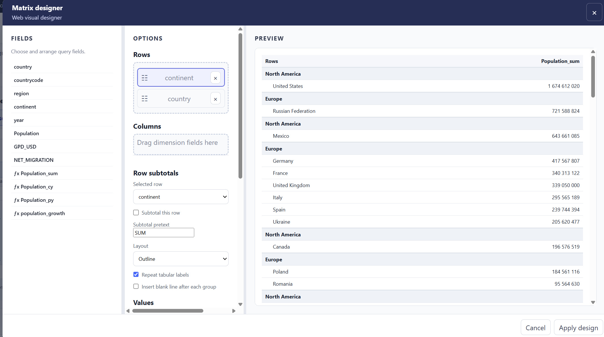
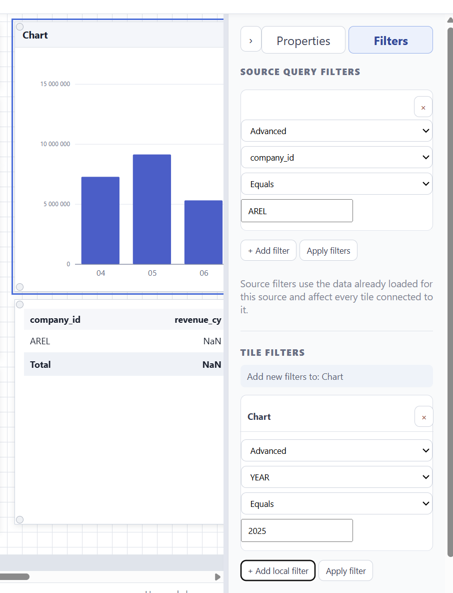
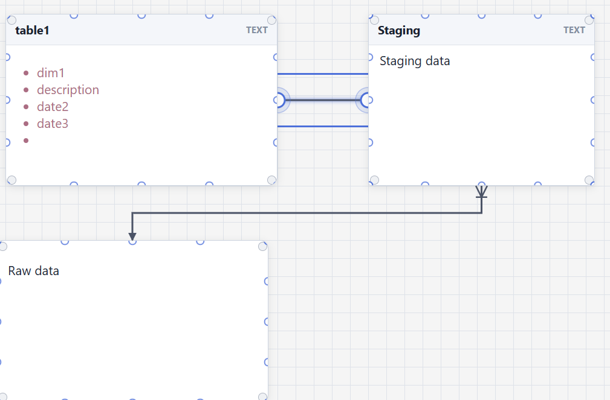
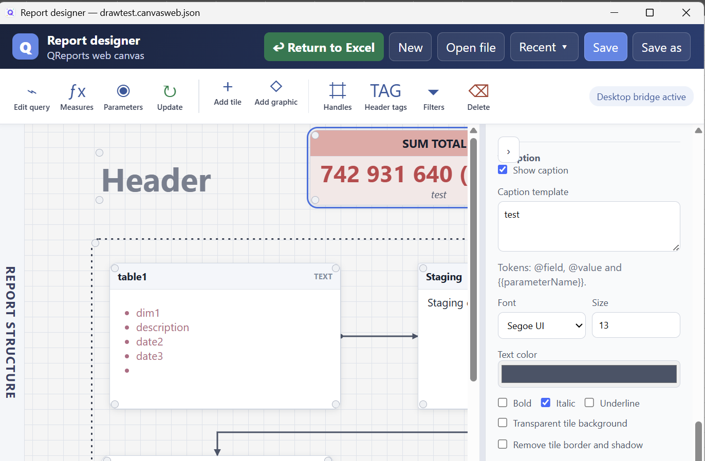
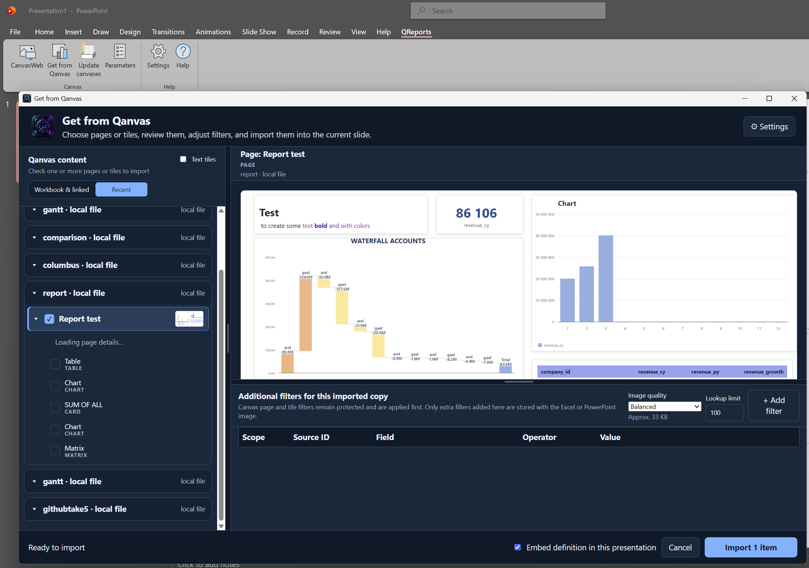

Canvas tool
Premium/Pro feature: Canvas requires the Canvas Tool feature in the QReports license. It is available in the applicable Premium/Pro package. PowerPoint integration additionally requires the PowerPoint add-in feature.
Canvas Web creates multi-page visual reports from queries, tables, measures, parameters, charts, and formatted tiles. The current ribbon button opens the WebView report designer; the old Qanvas tool is available under Legacy tools. The same web designer is used from Excel and PowerPoint, so a visual definition follows the same query and parameter rules in both hosts.
The report structure pane is on the left, the page canvas is in the centre, and Properties and Filters are on the right. Both side panes are resizable and collapsible from their edge buttons. Select a tile to edit it; click the page background to clear the selection. Drag a tile by its header and resize it from any corner. Alignment guides appear while moving or resizing objects.

Open Canvas
From Excel, choose QRep > Canvas Web. You can also right-click a supported QReports shape or picture and open its stored Canvas definition.
From PowerPoint, choose QReports > CanvasWeb to create or edit a source file, then Get from CanvasWeb to import its pages or tiles. See PowerPoint add-in.
Qanvas opens and saves standalone .qanvas files. Recent lists only valid Qanvas documents, newest first, and hides the file extension for readability. Existing .quanvas, .canvasweb.json and .qanvas.json files remain supported as legacy input formats. The embedded workbook representation remains compatible with the QReports Canvas definition used by Excel and PowerPoint.
The application theme applies to the designer, dialogs, filters, source/update/local-data workspaces, SVG editor and native loading screen. Canvas theme palettes are also available to charts and SVG graphics. Surface colors (background, text, headers, grid and controls) remain distinct from data-series palettes, so changing a chart palette does not recolor the application chrome.
The Executive indigo preset provides a dark financial-report style with deep navy/indigo surfaces, warm cream highlights, muted lavender text, and separate green/red status colors. Select it under Settings > Colors to apply the complete interface and report-color combination to new canvases. Its matching ExecutiveIndigo chart palette can also be selected independently in an existing canvas or chart.
Select and arrange objects
Select one object or drag a selection rectangle around several objects. Selected objects can be moved with the mouse or arrow keys. Right-click an object to duplicate, remove, or change its layer order. The Handles command hides design handles, and Header tags hides the small Table, Matrix, Chart, or Text type labels without hiding the tile title.
Text tiles and text graphics support formatted HTML content. Double-click their content to edit directly on the canvas; double-click a tile header to edit its title. Only one text editor is active at a time. The Properties pane shows a preview and offers Edit on canvas or Edit here when the side editor is more convenient.
For a one-off, mostly static advanced composition, a Text tile is often the quickest option. Its safe formatted HTML can represent outlined callouts, boxes with arrows, code panels, and simple flow diagrams while remaining portable with the report. Prefer the SVG designer when exact scalable geometry or data-bound shapes matter, canvas shapes and connectors when each part must remain independently movable, and Multi-card when the same data-driven layout repeats for many records.
The compact text toolbar applies font, size, color, bold, italic, underline, alignment, indentation and list formatting to the selection or current caret position. With no active selection, its values become the typing format; use the whole-text action when the intention is to restyle the complete object. Paragraph styles include Normal, Heading 1, Heading 2 and Quote. Less-common insertion commands are under More so the toolbar remains usable on narrow tiles.
Use More > Insert > Date countdown for a deadline or milestone that should update automatically without a measure. Select the target date and provide configurable text for Before the date, On the date, and After the date. {days} is replaced by the absolute day difference and {date} by the formatted target date. The dialog inserts a subtle wrapping code chip such as datecountdown("2026-10-11", "Neste om {days}", "I dag", "Ferdig"), making the complete function easy to edit, copy, and paste into another text object. Normal canvas rendering, Present mode, and webpage exports display only its recalculated result.
Pages, data sources, and parameters
Pages define layout, size, background, tiles, and graphics. Data sources are document-level, so the same loaded source can be reused on several pages. Every report has one protected Main source, normally created from the Excel source that opened Canvas. Add any number of Global sources when visuals need other connections or queries.

Each source owns its query and measures. Every data-bound tile initially uses Main source, but its source can be changed independently—for example, several tiles can share Global source 1 while other tiles continue to use Main source.

Use Edit query to open Query Web, Measures to manage Mini DAX measures, and Update to load or refresh the selected source. The available fields and measures follow the source of the selected tile.
Use Links… under Data sources, or right-click a source and choose Source relationships…, to match two sources by one or more keys. Choose Dimension (many → one) when a compact master table supplies descriptive fields to a larger fact source, or Measure lookup when only prepared measures are needed from the related source. For example, link a detailed P&L source to a Company master by CompanyId, and separately to a compact working-capital source by Company + Period.
Dimension fields can be used as table groups, matrix row/column axes, and chart category/group fields. Linked measures can be used as table or matrix values and as chart values/series, including in the full Chart Designer. A Company Group stored once in a 50-row master table can therefore organize visuals driven by a 50,000-row accounting source without repeating the text on every accounting row. Linked items are labelled with their source in each designer. Existing denormalized and single-source canvases continue to work without relationships or changes.
Relationships are indexed lookups, not physical row joins. Qanvas builds a shared relationship index for the loaded sources and materializes only linked fields used by a visual. The relationship editor checks the loaded rows and reports 1 : 1, 1 : many, or many : 1; a detected many-to-many relationship or non-unique Dimension key cannot be saved. A table lookup field displays (multiple) if the current row still resolves to more than one distinct value. Active source and page filters on a Dimension source propagate to every directly linked fact source using the saved dimension → fact direction. The same relationship metadata and filter propagation are included in folder and single-file webpage exports. Tile-local filters remain local to their tile.
Right-click the protected Main source and choose Reset Main source when a design no longer needs the workbook/query data that originally opened it. This clears Main source data, measures and query details while keeping the required Main source entry and the visual design. Review dependent visuals after resetting because their former fields are no longer available.
Parameters are global definitions shared by every source. A value such as period 202605 or region Europe can therefore be resolved consistently in Main source and all global sources. Excel _control values remain authoritative when Canvas is opened from a workbook.
Add source can also create an Embedded manual table or attach/create a Manual local table. Embedded tables store their JSONL rows only in the current .qanvas file. Manual local tables live on the current computer and can be reused by several reports. They share the same editor: type directly in cells, add rows, resize or reorder columns, configure types and lookups, and press Tab in the last field to create the next row. A lookup can use values from another source or turn a cell into the shared calendar picker, with optional time and ISO week numbers. Use Edit columns when schema, lookup, or delete controls are needed. The storage command converts an embedded table to a reusable local file, or takes a snapshot of a local table back into the report. View data opens cached source, embedded Gantt, and manual-table rows immediately, with search, copy, CSV export, and the appropriate Edit action.
Tile types

| Tile | Typical use |
|---|---|
| Table | Detailed rows with selected columns, headers, totals, and formatting. |
| Matrix | Grouped and hierarchical data with measures, totals, and conditional formatting. |
| Chart | Visual analysis using the shared QReports chart designer. |
| Gantt | Editable tasks positioned by start/end dates, with progress, milestones, and dependencies. |
| Card | A prominent KPI value with caption, comparison, or delta. |
| Multi-card | One reusable card layout repeated for every unique value of a dimension. |
| Text | Titles, explanations, dynamic parameter text, and annotations. |
| Picture | Logos, icons, illustrations, SVG templates and other image content. |
Table, Matrix, Chart, Card, and Multi-card tiles use their selected source. Text and Picture tiles are presentation objects and do not require a data field.
SVG templates can bind text and values and either inherit theme colors or use explicit overrides. The SVG editor uses the same themed form controls as the formatted-text dialog, and theme-derived SVG colors update with the selected Canvas theme.
Create a first Canvas report
- Open Canvas and add or rename the first page.
- Configure Main source, or add a global source, and use Edit query to retrieve data.
- Update the source and confirm that its fields appear under Data.
- Add a Table tile and select the fields to display.
- Add a Chart or Card using the same page data.
- Resize and align the tiles on the canvas.
- Add global parameters or source/tile filters when the report needs interaction.
- Hide handles and header tags to review the finished layout.
- Save or return the Canvas to its host.
Tables and matrices
Select a table or matrix and choose Design to open the web visual builder. Its layout is consistent for both visuals: available Fields on the left, selected objects and formatting in the middle, and the live preview on the right. Drag fields into the chosen columns, rows, or values and use Advanced ordering for multi-column ascending/descending order.
Matrix rows form an ordered hierarchy. Tabular layout keeps a separate column for each row level, while Outline uses one indented hierarchy column. Parent levels can show formatted subtotals at the top or bottom, optional blank lines, and expandable +/- controls. When bottom subtotals are used, Subtotal only is the default: the total row also acts as the group heading and expands or collapses the values above it. Choose Header + subtotal when a separate group heading is preferred. Global row and subtotal controls appear before the settings for an individual row level. The lowest row level remains detail and follows the normal Table/Matrix formatting. Value headers follow their value-column alignment.

Charts
Chart tiles use the shared Chart tool. Select categories and series, then configure labels, axes, gridlines, colors, markers, lines, and chart-specific options.
When a chart is saved back to Canvas, both its visible rendering and JSON definition are stored. Reopening Design Chart should restore the editor from that definition.
Gantt schedules
Add a Gantt tile and open Design to map Task, Start, and End. Optional fields include Task ID, Group, Owner, Progress, Planned hours, Hours used, Status, Priority, Description, Milestone, and Depends on. Dependencies refer to Task IDs; multiple predecessors can be separated by comma, semicolon, or |.
Choose Embedded for a self-contained, editable project plan stored in the Canvas file. Choose Linked/source to map an existing source as a read-only Gantt view. Embedded plans can also display their rows as a table; linked plans can switch between table and Gantt views without writing changes back to SQL, Excel, or an API.
The frozen task table and SVG timeline use the canvas theme. Edit task names, dates, owner, status and progress directly in the table, or use the handles at the start, middle, and end of a bar to change its start, move it, or change its duration. The opposite edge remains fixed during a start/end resize, and the drag tooltip shows the effective date. Date changes update embedded rows saved in the canvas.
Use Columns to select and order visible fields. Click a column heading to sort; when grouping is enabled, projects/groups remain together and tasks are sorted within each group. Drag a header edge to resize a column. Right-click a heading to filter values, remove the active filter, hide the column, or choose date grouping/range options. Gantt-local filters are applied in addition to normal datasource filters.
The timeline supports Day, Week, Month, Quarter, and Automatic scales. Week headers show both week number and date throughout the complete range; Quarter provides a compact multi-year historical view. The same labels and scale choices are retained in webpage exports.
Projects/groups can be collapsed from their +/- control. The toolbar and task/bar context menus provide Add, Duplicate, Delete, Milestone, Owner, Status, Progress and Depends on actions. Reusable Group/Project, Owner and Status lists can define dropdown values, badges and theme/manual colors; status may also color the Gantt bar. Progress can use a badge or a multi-level progress bar.
The compact project toolbar keeps navigation and view controls together: move to the previous or next task, reveal Today or the selected task, zoom the timeline, fit the complete schedule, open schedule health, choose columns, and change grouping from More. Selecting a table row or task shape can open the compact task inspector at the bottom; turn off Show inspector when bar clicks should only select tasks. Drag the inspector's upper edge to choose how much height it uses; the height is saved with the Gantt. At normal tile widths, every control fits into three dense rows: task, status, milestone and the read-only Task ID; dates, project/group, owner, priority and progress; then hours, predecessors, notes and row actions. Narrow inspectors wrap these groups responsively instead of clipping them. Inspector controls, task menus, dropdowns and date fields use the Gantt theme. Predecessors opens a movable editor so the schedule can remain visible while dependencies are reviewed.
Dependencies stay collapsed behind Predecessors until they are needed. Its count shows whether links exist, and opening it provides the full multi-predecessor editor: search the task list, select each predecessor, or remove a selected dependency from its chip. The saved Depends on field remains compatible with linked tables by storing the task IDs as a comma-separated value. Dragging another dependency arrow adds that predecessor instead of replacing existing links.
Schedule health checks the source rows as well as the visible timeline. It reports missing task names, invalid or reversed dates, duplicate task IDs, missing predecessors, cycles, and tasks that begin before their predecessor finishes. Choose an issue to select and reveal the affected task when it is available on the timeline.
Dependencies connect task IDs. Selecting a bar or dependency can highlight the selected task and its parent/child path when Highlight connecting arrows is enabled. Missing dependency IDs, self-dependencies, circular paths, invalid dates, and an end date before the start date should be corrected before distribution. The timeline context menu controls scale, row height, table width, today line and weekend shading.
Text after each shape can show Task by default plus optional Owner, Status or Progress fields. Its typography, dependency arrows, timeline, table header, group rows, task rows, tile surface and progress/bar colors have separate theme/manual formatting areas. Click a rendered area in the designer to jump to the matching format section.
Task descriptions use the same formatted rich-text editor as text tiles and text graphics. The information button beside a bar opens a movable, resizable description editor; its Insert menu contains Link, Image, Table, Parameter, Measure, and Field. Links can open a webpage or another Qanvas page. Tables remain editable, and inserted pictures use the shared compression, resizing and alignment workflow. Use Checklist, or type -- followed by Space, to start a clickable checklist. Enter continues the checklist and Tab / Shift+Tab changes its nesting level. A collapsed caret converts only its current line to a bullet or checkbox; select several lines only when they should all become list items. The description header and task-table preview show completed / total items, such as 3/7; this count is independent of Progress. In Present mode, changes can be saved only when Allow editing in Present mode is enabled.
Editing is enabled in the normal canvas by default. Allow editing in Present mode is a separate Gantt option and is off by default so a presentation remains read-only unless explicitly enabled.
In Presentation and exported webpages, Gantt keeps its resource view, group collapse levels, column chooser, and read-only information dialog. The Gantt toolbar starts hidden when that option is selected and can be revealed without changing the saved report layout.
For an embedded schedule, enable Expose embedded tasks as a datasource to make its task rows available to cards, tables, matrices, charts, page filters, Presentation mode, and webpage exports. The published source uses the stable ID gantt:<tile-id> and points to the tile-owned task rows; the canvas file stores only a lightweight source descriptor instead of a second copy of the data. Gantt column filters remain local to the Gantt view, while filters added to the published datasource use the normal Canvas source/page/tile filter pipeline. A Gantt cannot consume its own published source. Stopping publication or deleting the source Gantt warns when dependent visuals will be moved back to the Main source.
Parameters and filters
Canvas uses the shared parameter model: text, lists, hierarchical multi-select trees, date pickers, numeric inputs, formatting, and text parsing.
- In Excel-hosted Canvas, parameters are refreshed from the workbook
_controlsheet. - In PowerPoint, parameters are stored with the presentation and can refresh all Canvas shapes.
- Source filters apply to already loaded source data and affect every tile connected to that source.
- Tile filters apply only to their referenced tile and remain listed with the tile name.
- Relative-date presets such as Last 7 days apply immediately when selected; changing the accompanying day, month, or year count refreshes the same filter.

Use the same {{parameter}} syntax in SQL, Mini SQL, text, and supported visual definitions.
Graphics and connectors
Canvas graphics include formatted text, action tiles, lines, rectangles, and connectors. Action tiles can open another page, refresh sources, or open parameters; their action also runs when clicked in edit mode, while right-click continues to open their design menu. To select a linked action without following it, press and hold the control. Formatted text and text tiles share headings, font styling, bullets, checklists, tables, code/diagram blocks, links, compressed inline pictures, and the Insert menu for Link, Image, Table, Date countdown, Parameter, Measure, and Field. Type - followed by Space for a bullet, or -- followed by Space for a checkbox; existing text on that line is retained. New text boxes clip cleanly at their edge by default; choose Scroll inside box for longer page-like content. Lines and rectangles support color, thickness, solid/dotted/dashed styles, shading, transparent fill, rounding, movement, and resizing. Connectors attach to defined points on tile edges and follow tiles as they move. Their route, endpoints, arrow size, line style, and layer order can be configured. Layer commands use compact Bring to front and Send to back menus; open the submenu for a one-step forward or backward move.
Canvas resize handles are shown only on selected objects. Type - followed by Space on the active line to start an automatic bullet, or -- followed by Space to start a checkbox list. Pasted HTML and plain text preserve their existing list structure and are not passed through the automatic typing shortcut. Page and linked tile filters can be placed on the canvas as button groups, cards, or multi-cards; see Visual filters on canvas.

Report Grid
The Report Grid provides a spreadsheet-like layout for compact statements, KPI blocks and manually arranged report pages. A new grid starts with two rows and four blank columns. Every position is a normal A1 cell; there are no dedicated first-row column headers or first-column row labels. Cells support direct values, formulas, source fields/measures, ranges, keyboard editing, cut/paste and filters. Text is single-line by default so content cannot unexpectedly increase a row's height; Wrap text can be enabled per cell or selection. Cell formatting also supports top, middle (default), or bottom vertical alignment. Row and column filters are attached through the numbered and lettered axes.
Press F2 on any single cell to edit its current content. A measure-backed cell shows a readable measure expression in the cell and formula bar instead of only its calculated result; press Enter to commit or Escape to restore the original binding. While a formula is being edited, its colored cell/range references can be dragged to a new location. Relative references move with the selection and $ absolute row or column markers remain fixed.
Ctrl+C or Copy all copies both cell content and formatting; right-click the destination to choose Paste all, Paste formulas / values, or Paste formats. Ctrl+V continues to paste everything. The compact right-click menu groups Copy, Paste, Insert row, Insert column and Move commands into submenus; clicking a Copy/Paste/Insert parent also runs its displayed default action. Repeat last action (F4) is shown in the same menu. F4 repeats the last cell or range action on the current selection, including theme or manual formatting, number formats, alignment, borders, conditional formatting, dimensions, clearing, field/measure selection, formulas, and supported row/column operations; repeated formulas adjust relative references for each destination. While editing a formula, F4 retains its spreadsheet convention of cycling relative and absolute references. Top and bottom spacing can be reduced for layouts that need the grid close to surrounding content.
Layout, appearance, and export
Canvas supports preset or manual page sizes, including widescreen/presentation and A4 portrait layouts, plus Web page · fixed width / automatic height for long scrolling reports. In web-page mode, the chosen width stays fixed while the page grows downwards to include the lowest tile or graphic. Pages also support solid colors, background images, rounded tiles, transparent Card backgrounds, optional tile borders, and explicit layer ordering. Card tiles provide configurable value and caption templates, independent typography and alignment, captions below/left/right, comparisons, conditional arrows/icons and parameter tokens. Preset or custom positive/negative/zero number formats such as +0.0;-0.0;0.0 can retain an explicit plus sign. Multi-card tiles repeat one compact card by a selected dimension and arrange field or measure values in a configurable grid. Open the Multi-card designer from Properties, F2, or the tile's right-click menu to choose the grouping field, aggregation and formatting for each value, fixed or responsive card columns, captions, text templates, borders, spacing and theme ownership. Heading, supporting text, values and value captions each have independent font, size, weight, style, alignment and color controls. Field tokens can resolve calculated text columns row by row, including date/week descriptions.
Present opens the canvas without design controls. Each page has its own Presentation resize choice: Automatic, Fit whole page, Fit width, Fit height, or Actual size (100%). Automatic fits known slide presets to the complete screen and fits manual, A4, and long web/report pages to the available width. Press F11 to enter full screen and F11 again to restore the normal window; the toolbar button provides the same toggle. Clicking a page or navigating with the arrow keys reapplies that page's configured view. The presentation toolbar provides manual zoom and fit actions. Ctrl+mouse-wheel changes this presentation zoom instead of WebView/browser zoom. Double-click a visual to smoothly enlarge and centre it; double-click it again or press Escape to return to the previous page view. Once visual focus has been restored, pressing Escape asks for confirmation before presentation mode closes, protecting the current page position and temporary annotations. Return to edit closes presentation mode directly without this confirmation. Interactive controls inside a visual do not trigger focus zoom. When space is constrained, excess page tabs move into the … menu without creating a second toolbar row. The toolbar also provides a red on-screen pointer and rectangle or oval annotations. Pointer is an independent toggle and can remain visible while either drawing tool is active. Annotations are kept separately for each page during the current presentation. Use Undo to remove the latest annotation, select the eraser icon and click a specific annotation to remove it, or use Clear page to remove all annotations from the current page. Presentation annotations are temporary and are discarded when returning to edit mode.
Application Settings includes an optional experience mode. The default mode uses the normal QReports/Qanvas wording. Qvitr mode is off by default and replaces selected labels and icons with the alternate Qvitr vocabulary and artwork. Modes are read from the experience-mode configuration so additional modes can be added later without rewriting the report format.
AI-assisted editing
The Qanvas AI panel supports three workflows:
- CLI creates or reconnects a managed workspace and sends queued requests to the configured Codex, Claude Code, or GitHub Copilot CLI provider. Qanvas verifies workspace write access before each turn, starts the CLI in that exact folder, and never enables unrestricted/bypass permission mode. Codex also receives its workspace-write policy; native Windows Claude Code has no sandbox isolation, so Qanvas uses
acceptEdits, an explicit workspace-only instruction, and host-side validation. - External workspace creates a folder that an external ChatGPT Work task can monitor. Requests and activity are exchanged through that workspace; keep the external task active while it is processing.
- Manual upload creates a support pack for an AI chat when no automated CLI/workspace connection is used.
Requests can include pasted screenshots and uploaded files. Attachments are copied into the AI workspace and referenced by the queued request. The conversation, request queue and live activity/status area are independently scrollable and resizable; automatic scrolling pauses when reviewing older messages.
The header AI button is a toggle: select it to open the panel, then select it again to close the panel without reaching for the panel's × button.
AI has its own top-level Settings page. It selects Codex, Claude Code, or GitHub Copilot, shows provider setup and feature-audit choices, and leaves room for future AI assistance in Query and Measures workspaces. The AI panel identifies the active engine, open report, workspace folder, and working copy. Workspace identity is stored per report, so opening or renaming a report does not silently reconnect an unrelated older workspace.
Qanvas validates the returned JSON before applying it. The exported AI guidance describes native tiles, Gantt, rich text, theme bindings, hyperlinks, embedded images and purpose-built SVGs. It explicitly checks that requested features exist in the document rather than accepting a written claim. A custom SVG created from scratch must be stored as kind: "svgGraphic" with lowercase nested svgGraphic.template: "manual"; the standalone element belongs only in nested svgGraphic.svgCode. This rule is sent to Codex, Claude, and Copilot on every turn, including resumed conversations. GitHub Copilot can run additional feature-audit/repair turns; disable Run automatic feature audit and repair turns in Settings for faster small edits while retaining the structural validation pass.
AI-generated changes should still be reviewed visually. Validation proves the document is structurally usable, not that every image, layout choice or factual statement is correct.

The header can create or open a standalone Canvas document, maintain recent files, and save changes. When hosted by Excel or PowerPoint, returning to the host captures the page and stores both the rendered image and editable definition.
Return to Excel
When hosted by Excel, Return to Excel stores the Canvas specification with the workbook shape and replaces or inserts its rendered image. Loading the worksheet refreshes stored Canvas shapes through an off-screen render-only process, so the editor does not open or flash during a normal report refresh.
Keep the underlying workbook connections, _control parameters, and report code with the workbook. The rendered picture is only the visible result; the stored Canvas JSON is required for later editing.
Use Canvas in PowerPoint

The PowerPoint add-in imports a selected Canvas page or tile as a picture on the slide. The picture stores a link to the source .qanvas file, the selected object, and any import filters. Edit the source file in CanvasWeb, then use Update canvases to rerender linked pictures.
PowerPoint provides CanvasWeb, Get from CanvasWeb, Update canvases, and Parameters. See the PowerPoint QRep Ribbon.
Direct tile properties and local pictures
Chart properties expose the shared chart settings directly in the Canvas pane; see Chart tool. Matrix Subtotals exposes the selected-row subtotal settings, pretext, expand/collapse and initial collapse, layout, repeated tabular labels, blank lines, outline row header and subtotal position. Header columns remain fixed during horizontal scrolling. Matrix designs support up to 2,000 displayed items; large matrices still affect rendering performance. Data bars place positive and negative values on opposite sides of a common zero baseline and can apply to groups and details.
Picture tiles accept direct image URLs or Choose image local files. Local images are embedded in the saved report. Image settings includes the picker, URL, hidden scrollbars and a Wikimedia Commons reference. General settings holds sizing, background and transparency. Image sizing supports Fit to window (whole picture), Fill width and Fill height, with a minimum tile height of 30.
Card formatting, Target and variance, and Text sections are collapsible. Graphics have General settings for position/size and separate Rectangle, Line or Connector settings. Not all property sections currently use the same order: General settings may appear near Header settings; a consistent ordering review is still pending.
Hyperlinks in text
In the formatted text editor, place the cursor or select text and choose Link…. Choose http (default), https or no prefix; enter display text and a screen tip. Place in this document links to another Canvas page. Links are underlined by default, with a no-underline option. Put the cursor inside an existing link and choose Link to edit it. Internal page links also navigate exported report tabs. External links still require network access.
Portable report saves
Saving a .qanvas file packages referenced local sources and embedded pictures with the editable report, so it can be copied to a shared file area. SQL/API credentials and external infrastructure are not made portable by this save; test reopening on another computer before distribution.
Webpage exports
Choose Export webpage… and create a named export definition. Settings and last successful export date are stored in the Canvas document: save the Canvas file to persist them. Save settings does not export; Export / update writes the report.
The export dialog follows the active application theme. SVG tiles are packaged with the SVG runtime in both folder and single-file exports.
- File settings: Folder website or Single HTML file, target folder, and filename for single-file exports. The default single filename is the report name;
.htmlis added automatically. Change the filename to keep a historic copy in the same folder. Re-exporting the same Qanvas filename replaces that export, but unrelated HTML files are protected. - Filters: Automatic/all columns or selected columns, filter types, and horizontal/top or vertical/left-pane layout. The filter field list is bordered and scrollable.
- Report appearance: optional report name with size/color/bold/italic/underline; optional Subheader text on a new line with separate formatting; selected and unselected button colors. A preview shows these choices.
Folder exports include index.html, application files, exported data, images and an export marker. Choose an empty folder or an existing Qanvas export folder. Keep the whole folder together. Single HTML exports embed application code, styles, data and supported images in one file, with no sidecar files. Both formats can be opened locally in a modern browser. Hosted access requires a suitable web server; uploading HTML to a SharePoint document library is file distribution, not normal static hosting.
Pages become tabs; exported tables/matrices support header sorting and matrix expansion. Filters use only exported, already loaded rows, with no live SQL/API refresh. Filter types are Basic, Advanced (comparisons/contains/from-to), Multiple values (All/Clear), Date, Date range, Buttons and Toggle (on/off plus All values). Date controls use an Apply/Cancel/Clear calendar, highlight today, and adapt to narrow screens. Choose date(s) uses selected colors; date boxes use unselected colors.
Security: every exported row is accessible to recipients, including rows hidden by filters. Filters are not row-level access control. Protect the entire hosting package, not just the landing page. Browser-download rules, large datasets and embedded images can affect size and performance. Re-export to update existing offline reports.
Current considerations
- Test queries in Query Tool before building a large visual page.
- Large images and many detailed tiles increase rendering time and file size.
- Keep connection credentials out of Canvas text and screenshots.
- API-backed page-query behavior can vary by version; API Explorer and Query Tool remain the supported definition path.
- A rendered image without its stored Canvas definition cannot be reopened for full editing.
Continue with Query Tool, Parameters, Chart tool, or PowerPoint add-in.
Export all pages as PDF
Export PDF saves every canvas page as a separate page in one static PDF, in report tab order. Choose a filename in the save dialog. It uses the existing Microsoft WebView2 runtime, with no additional PDF installation. The PDF uses the largest canvas dimensions as its paper size; smaller canvases are fitted proportionally. It preserves the canvas background. Designer panes and resize handles are omitted.
Export uses the current filter state and returns you to your original report tab. PDF does not retain interactive filters, scrolling or matrix expansion; scrollable tiles show their current viewport. Use webpage export when readers need interactive results.
Export all pages to PowerPoint
Choose Export > Export PowerPoint… to create a .pptx with one slide per
Canvas page, in page order. Each slide contains a high-resolution image of its
page. Pages with a different aspect ratio from the first page are fitted and
centered on the slide. The export uses the current loaded data and filter state,
then returns to the page you were editing.
The slides are static pictures. To change their data or design, update the Canvas and export again. This export runs in QanvasWeb without the PowerPoint add-in or a separate PowerPoint installation; PowerPoint or another compatible viewer is needed to open the resulting file.